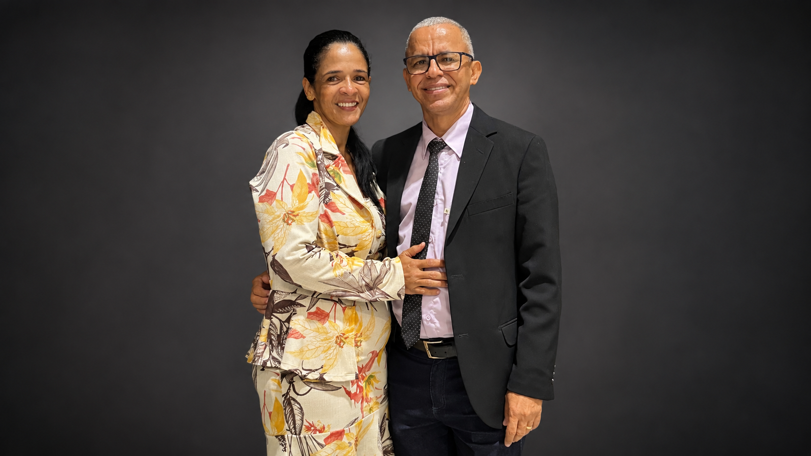

Pastores Presidentes
José Vieira e Iraci
Conheça a caminhada ministerial e o serviço pastoral de José Vieira e Iraci na Igreja Batista Betel.
Conheça aqueles que servem à nossa comunidade por meio do cuidado pastoral, do ensino da Palavra e do discipulado.
Conheça a caminhada ministerial e o serviço pastoral de José Vieira e Iraci na Igreja Batista Betel.

Conheça a caminhada de fé e o serviço ministerial de Iran e Rosa.
Conheça a trajetória de Samuel e Patrícia e sua caminhada na comunidade cristã.
Conheça a história ministerial de Neilton e Penha.
Conheça a caminhada de fé e a trajetória ministerial de Alan e Damares.

Conheça a história e o serviço ministerial de Nei e Marina.

Conheça a trajetória de Daniel e Ane e sua caminhada ministerial.